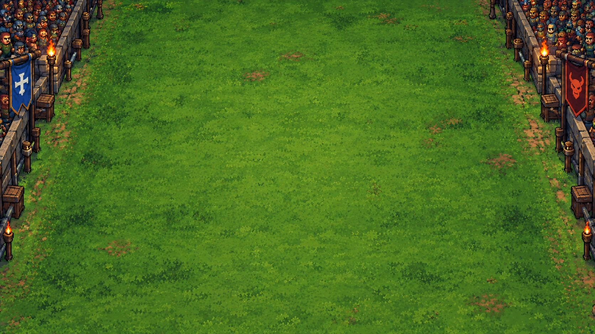
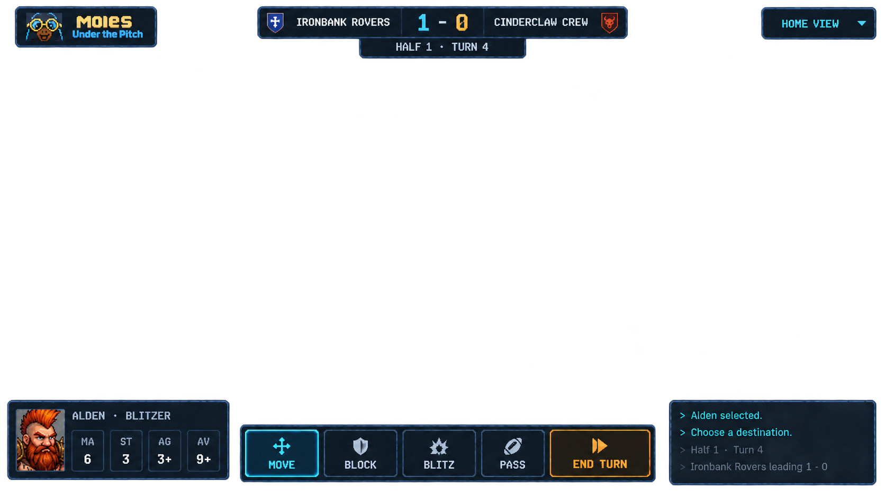

Reference fixture for ADR 0003. All views share the same 390 squares, 22 canonical player positions and ball. Players stand at projected square centers; the cyan frame is Alden's square. Width fit shows a slice of the finite pitch; pan to either end or choose Full 26 × 15 to inspect the entire surface. Click a square to read its canonical coordinates. This viewer changes framing only; it does not issue game actions.